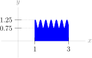

1
Give a range of possible values for the shaded area in the picture below.

For Questions 1 through 5, we want you to develop an understanding of the model we are using to define an integral: we approximate the area under a curve by bounding it between rectangles. Later, we will learn more sophisticated methods of integration, but they are all based on this simple concept.
In Questions 6 through 10, we practice using sigma notation. There are many ways to write a given sum in sigma notation. You can practice finding several, and deciding which looks the clearest.
Questions 11 through 15 are meant to give you practice interpreting the formulas in Definition 1.1.11. The formulas might look complicated at first, but if you understand what each piece means, they are easy to learn.
Give a range of possible values for the shaded area in the picture below.
Give a range of possible values for the shaded area in the picture below.
Using rectangles, find a lower and upper bound for \(\displaystyle\int_1^3 \dfrac{1}{2^x}\dee{x}\) that differ by at most 0.2 square units.
Let \(f(x)\) be a function that is decreasing from \(x=0\) to \(x=5\text{.}\) Which Riemann sum approximation of \(\displaystyle\int_0^5 f(x)\dee{x}\) is the largest--left, right, or midpoint?
Give an example of a function \(f(x)\text{,}\) an interval \([a,b]\text{,}\) and a number \(n\) such that the midpoint Riemann sum of \(f(x)\) over \([a,b]\) using \(n\) intervals is larger than both the left and right Riemann sums of \(f(x)\) over \([a,b]\) using \(n\) intervals.
Express the following sums in sigma notation:
Express the following sums in sigma notation:
Express the following sums in sigma notation:
Evaluate the following sums. You might want to use the formulas from Theorems 5 and 6.
Evaluate the following sums. You might want to use the formulas from Theorem 1.1.6.
In the picture below, draw in the rectangles whose (signed) area is being computed by the midpoint Riemann sum \(\displaystyle\sum_{i=1}^4 \dfrac{b-a}{4}\cdot f\left(a+\left(i-\frac{1}{2}\right)\dfrac{b-a}{4}\right)\text{.}\)
\(\displaystyle \sum_{k=1}^4 f(1+k)\cdot 1\) is a left Riemann sum for a function \(f(x)\) on the interval \([a,b]\) with \(n\) subintervals. Find the values of \(a\text{,}\) \(b\) and \(n\text{.}\)
Draw a picture illustrating the area given by the following Riemann sum.
Draw a picture illustrating the area given by the following Riemann sum.
Fill in the blanks with right, left, or midpoint; an interval; and a value of n.
Evaluate the following integral by interpreting it as a signed area, and using geometry:
Evaluate the following integral by interpreting it as a signed area, and using geometry:
Remember that a definite integral is a signed area between a curve and the \(x\)-axis. We'll spend a lot of time learning strategies for evaluating definite integrals, but we already know lots of ways to find area of geometric shapes. In Questions 28 through 33, use your knowledge of geometry to find the signed areas described by the integrals given.
Use sigma notation to write the midpoint Riemann sum for \(f(x)=x^8\) on \([5,15]\) with \(n=50\text{.}\) Do not evaluate the Riemann sum.
Estimate \(\displaystyle\int_{-1}^5 x^3\,\,\dee{x}\) using three approximating rectangles and left hand end points.
Let \(f\) be a function on the whole real line. Express \(\displaystyle\int_{-1}^{7}f(x)\,\,\dee{x}\) as a limit of Riemann sums, using the right endpoints.
The value of the following limit is equal to the area below a graph of \(y=f(x)\text{,}\) integrated over the interval \([0,b]\text{:}\)
Find \(f(x)\) and \(b\text{.}\)
For a certain function \(f(x)\text{,}\) the following equation holds:
Find \(f(x)\text{.}\)
Express \(\displaystyle\lim_{n\to\infty}\displaystyle\sum_{i=1}^{n} \frac{3}{n} e^{-i/n} \cos\left(\frac{3i}{n}\right)\) as a definite integral.
Let \(\displaystyle R_n= \sum_{i=1}^{n} \frac{i e^{i/n}}{n^2}\text{.}\) Express \(\displaystyle\lim_{n\to\infty}R_n\) as a definite integral. Do not evaluate this integral.
Express \(\displaystyle\lim_{n\rightarrow\infty} \bigg( \sum_{i=1}^n e^{-1-2i/n}\cdot \frac{2}{n} \bigg)\) as an integral in three different ways.
Evaluate the sum \(1+r^3+r^6+r^9+\cdots+r^{3n}\text{.}\)
Evaluate the sum \(r^5+r^6+r^7+\cdots+r^{100}\text{.}\)
Evaluate \({\displaystyle\int_{-1}^2 |2x|\ \,\dee{x}}\text{.}\)
Evaluate the following integral by interpreting it as a signed area, and using geometry:
Evaluate the following integral by interpreting it as a signed area, and using geometry:
where \(0 \leq a \leq b\text{.}\)
Evaluate the following integral by interpreting it as a signed area, and using geometry:
where \(a \leq b \leq 0\text{.}\)
Evaluate the following integral by interpreting it as a signed area, and using geometry:
Use elementary geometry to calculate \(\displaystyle \int_0^3 f(x)\,\,\dee{x}\text{,}\) where
A car's gas pedal is applied at \(t=0\) seconds and the car accelerates continuously until \(t=2\) seconds. The car's speed at half-second intervals is given in the table below. Find the best possible upper estimate for the distance that the car traveled during these two seconds.
| \(t\) (s) | \(0\) | \(0.5\) | \(1.0\) | \(1.5\) | \(2\) |
| \(v\) (m/s) | 0 | 14 | 22 | 30 | 40 |
True or false: the answer you gave for Question 34 is definitely greater than or equal to the distance the car travelled during the two seconds in question.
An airplane's speed at one-hour intervals is given in the table below. Approximate the distance travelled by the airplane from noon to 4pm using a midpoint Riemann sum.
| time | 12:00 pm | 1:00 pm | 2:00 pm | 3:00 pm | 4:00 pm |
| speed (km/hr) | 800 | 700 | 850 | 900 | 750 |
(a) Express
as a definite integal.
(b) Evaluate the integral of part (a).
Consider the integral:
You may use the identity
Using a limit of right--endpoint Riemann sums, evaluate \(\displaystyle\int_2^4 x^2\ \,\dee{x}\text{.}\) You may use the formulas \(\sum\limits_{i=1}^n i = \frac{n(n + 1)}{2}\) and \(\sum\limits_{i=1}^n i^2 = \frac{n(n + 1)(2n + 1)}{6}\text{.}\)
Find \(\displaystyle\int_0^2 (x^3+x)\,\,\dee{x}\) using the definition of the definite integral. You may use the summation formulas \(\sum\limits_{i=1}^{n}i^3 = \frac{n^4+2n^3+n^2}4\) and \(\sum\limits_{i=1}^{n} i = \frac{n^2+n}{2}\text{.}\)
Using a limit of right-endpoint Riemann sums, evaluate \(\displaystyle\int_1^4 (2x-1)\,\,\dee{x}\text{.}\) Do not use anti-differentiation, except to check your answer. 23 You'll learn about this method starting in Section 1.3. You can also check this answer using geometry. You may use the formula \(\sum\limits_{i=1}^{n} i = \frac{n(n+1)}{2}\text{.}\)
Give a function \(f(x)\) that has the following expression as a right Riemann sum when \(n=10\text{,}\) \(\Delta(x)=10\) and \(a=-5\text{:}\)
Using the method of Example 1.1.2, evaluate
Using your answer from above, make a guess for
where \(c\) is a positive constant. Does this agree with Question 43?
Evaluate \(\displaystyle\int_0^a \sqrt{1-x^2}\dee{x}\) using geometry, if \(0 \leq a \leq 1\text{.}\)
Suppose \(f(x)\) is a positive, decreasing function from \(x=a\) to \(x=b\text{.}\) You give an upper and lower bound on the area under the curve \(y=f(x)\) using \(n\) rectangles and a left and right Riemann sum, respectively, as in the picture below.
Let \(f(x)\) be a linear function, let \(a \lt b\) be integers, and let \(n\) be a whole number. True or false: if we average the left and right Riemann sums for \(\displaystyle\int_a^b f(x)\dee{x}\) using \(n\) rectangles, we get the same value as the midpoint Riemann sum using \(n\) rectangles.